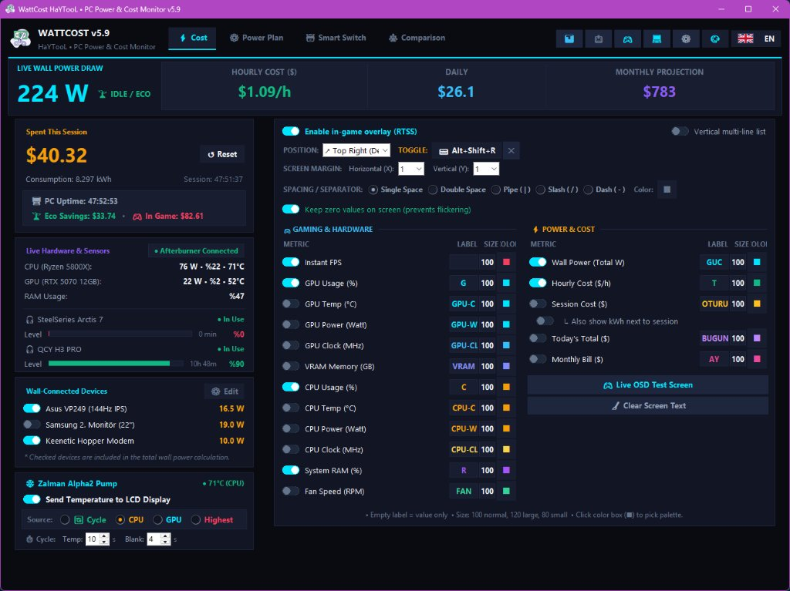
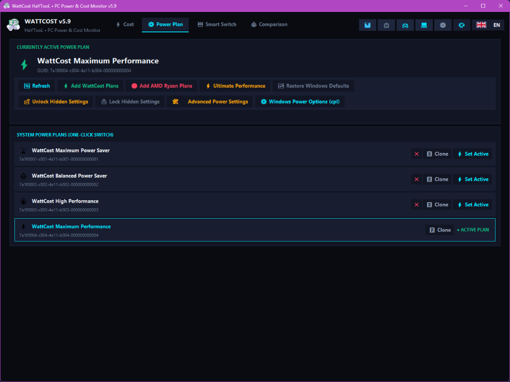
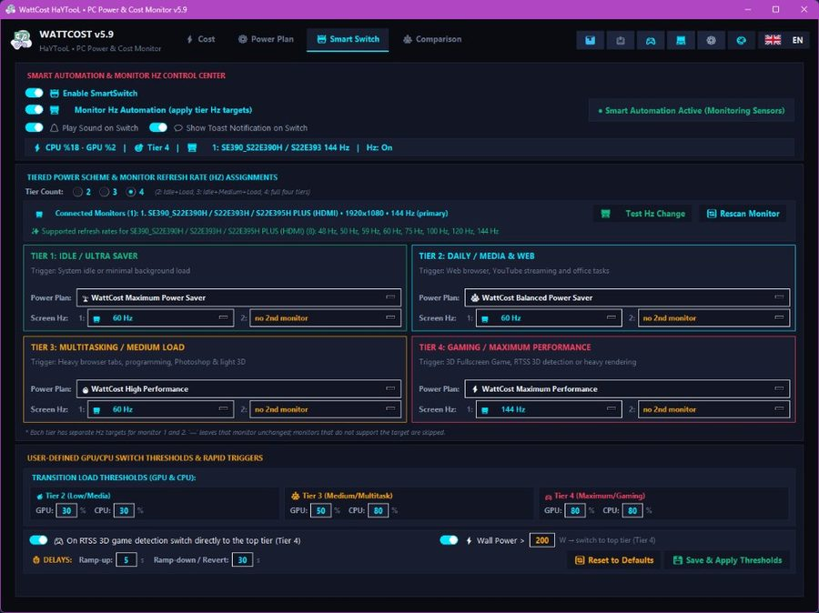
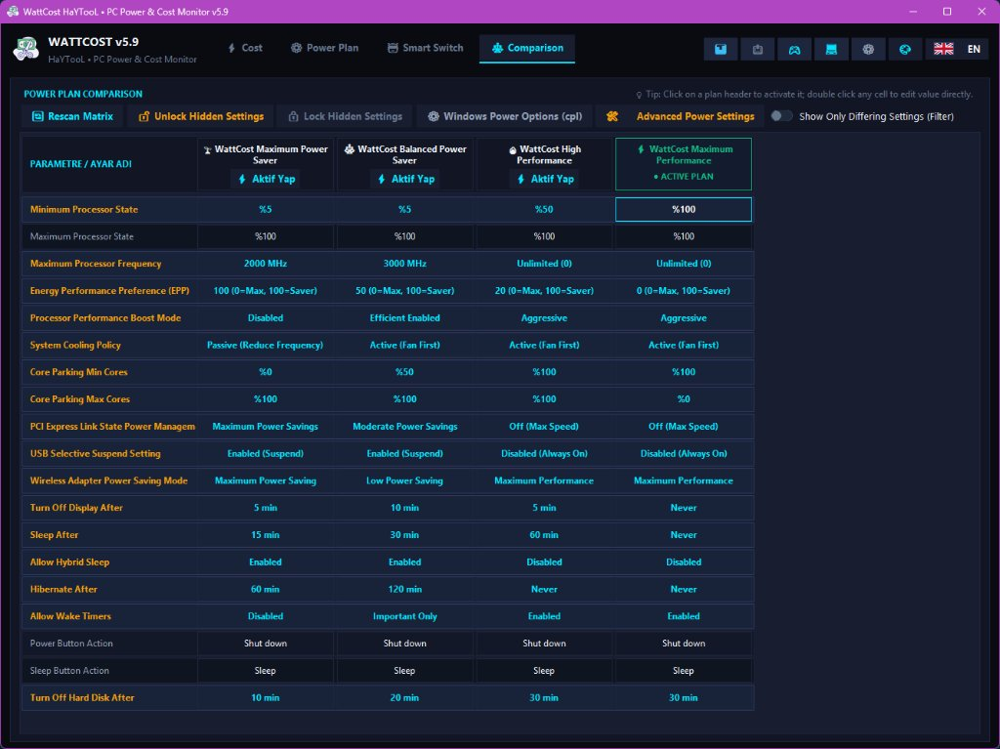
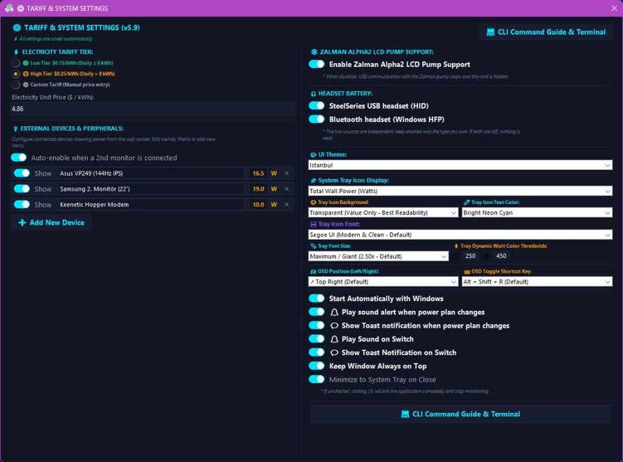

Donanım sensörlerinden anlık priz tüketimini (Watt) ve elektrik maliyetini hesaplayan, oyun içi RTSS göstergesi sunan ve akıllı güç planları yöneten yeni nesil Windows telemetri süiti.
Uygulamanın sunduğu zengin sekmeleri ve kontrol alanlarını inceleyin.





Gelişmiş donanım telemetrisi, sıfır sürücü yükü ve eşsiz optimizasyon özellikleri.
AMD Ryzen 7 5800X, RTX 5070 12GB ve full ARGB sistemde bizzat wattmetre ile test edilerek formüle edilmiş hassas priz çekişi.
RivaTuner Statistics Server üzerinden oyun ekranına canlı Watt, Saatlik Maliyet, FPS ve donanım istatistiklerini yansıtır.
Boştayken sistemi ve monitörü tasarrufa alır; oyun algılandığında tek bir gecikme olmadan en yüksek kademeye ve Hz değerine fırlar.
Ağır üretici yazılımlarına gerek kalmadan USB HID ve Windows Bluetooth üzerinden kulaklık şarjını ve kalan süreyi okur.
Sıvı soğutmanın LCD ekranına CPU/GPU sıcaklıklarını aktarır. Kendi yazılımından kat kat daha az CPU ve RAM tüketir.
Kernel sürücüsü yüklemez. Telemetriyi MSI Afterburner veya AIDA64 paylaşımlı belleğinden (Shared Memory) ultra hızlı ve güvenle okur.
Yazılımsal sensör yanılgılarını ortadan kaldıran kalibre edilmiş priz güç formülü:
Toplam Priz Gücü = Kasa Gücü + Monitörler + Modem + Harici Çevre Birimleri. Donanım PSU verim kaybı ve anakart taban tüketimi hesaba dahil edilir.